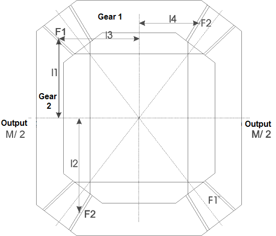
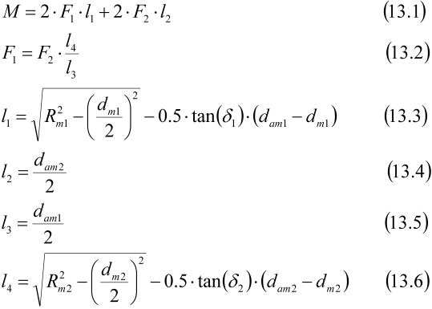

|
|
|


用于强度计算的方法
您可以选择以下方法：
1. 锥齿轮，静强度计算
实现圆柱齿轮的强度计算（参见"计算方法"章）。
2. 差速器，静强度计算
静强度计算可用于差速器齿轮。在差速器壳体上带有一个锥齿轮或准双曲面齿轮的后桥典型结构中，指定齿轮 2（半轴齿轮）上的扭矩来计算差速器锥齿轮。齿轮 2 上的扭矩是差速器壳体上扭矩的一半。您还必须输入支数（单击"Details – Number of strands"）。对于"2-pinion 设计"，输入 2 支。对于"4-pinion 设计"，输入 4 支，依此类推。计算采用最大圆周力 F1 或 F2（参见图 16.8）。

图 16.8：差速器中的锥齿轮

3. 依据 ISO 10300、方法 B (C) 的锥齿轮
ISO 10300，第 1、2、3 部分：锥齿轮承载能力计算。
4. 依据 ISO 10300 (2022) 的锥齿轮
ISO 10300，第 1、2、3、4、20 部分：锥齿轮和准双曲面齿轮承载能力计算。
5. 依据 AGMA 2003-B97 或 AGMA 2003-C10 的锥齿轮
ANSI/AGMA 2003-B97 或 AGMA 2003-C10：评定展成直齿锥齿轮、Zerol 锥齿轮和弧齿锥齿轮轮齿的抗点蚀性和弯曲强度。
6. 依据 DIN 3991 的锥齿轮
DIN 3991，第 1、2、3、4 部分：锥齿轮承载能力计算。
该计算通常按方法 B 的规定进行。齿形系数按方法 C 的规定计算。
7. Klingelnberg KN 3028/KN 3030 锥齿轮
该计算与 Klingelnberg 内部 KN 3028 和 KN 3030 标准相同。这些标准主要基于 DIN 标准。该计算提供的结果与 Klingelnberg 使用的参考程序相同。
8. Klingelnberg Palloid KN 3025/KN 3030 锥齿轮
该计算与 Klingelnberg 内部 KN 3025 和 KN 3030 标准相同。这些标准主要基于 DIN 标准。该计算提供的结果与 Klingelnberg 使用的参考程序相同。
9. 塑料锥齿轮
此处计算等效圆柱齿轮副（另见 DIN 3991）。此处计算按照 Niemann/VDI/VDI-mod 进行，方式与圆柱齿轮计算相同（参见"圆柱齿轮"章）。
10. DNV41.2 船舶发动机计算指南
Det Norske Veritas 船舶发动机计算指南 [11] 原则上对应于 ISO 10300（齿根、齿面）和 ISO 13989（胶合）。但是，它确实存在一些显著差异，尤其是在 S-N 曲线（沃勒线）方面。这些差异在我们的 kisssoft-anl-076-DE-Application_of_DNV42_1.pdf 信息表中详细说明，该信息表可应要求提供。
11. 依据 ISO 10300 的准双曲面齿轮
12. 依据 Klingelnberg KN 3029/KN 3030 的准双曲面齿轮
该计算与 Klingelnberg 内部 KN 3029 和 KN 3030 标准相同。这些标准主要基于 DIN 标准。该计算提供的结果与 Klingelnberg 使用的参考程序相同。
14. 依据 Klingelnberg KN 3026/KN 3030 的准双曲面齿轮
该计算与 Klingelnberg 内部 KN 3026 和 KN 3030 标准相同。这些标准主要基于 DIN 标准。该计算提供的结果与 Klingelnberg 使用的参考程序相同。
注意
有关 Klingelnberg 规定的强度计算的补充说明，请参见（参见"关于依据 Klingelnberg 标准计算的说明"章）。
Methods used for strength calculation
You can select the following methods:
1. Bevel gears, static calculation
Implements the strength calculation for cylindrical gears (see chapter Calculation methods).
2. Differential, static calculation
The static calculation can be used for differential gears. In a typical construction of rear axles with one bevel or hypoid gear on the differential housing, the torque on gear 2 (side shaft gear) is specified to calculate differential bevel gears. The torque on gear 2 is half the torque on the differential housing. You must also input the number of strands (click on "Details – Number of strands"). For "2-pinion designs", input 2 strands. For "4-pinion designs", input 4, etc. The calculation is performed with the highest circumferential force F1 or F2 (see Figure 16.8)
Figure 16.8: Bevel gears in differential gears
3. Bevel gears according to ISO 10300, Method B (C)
ISO 10300, Parts 1, 2 ,3: Load capacity calculation for bevel gears.
4. Bevel gears according to ISO 10300 (2022)
ISO 10300, Parts 1, 2, 3, 4, 20: Load capacity calculation for bevel and hypoid gears.
5. Bevel gears according to AGMA 2003-B97 or AGMA 2003-C10
ANSI/AGMA 2003-B97 or AGMA 2003-C10: Rating the Pitting Resistance and Bending Strength of Generated Straight Bevel, Zerol Bevel and Spiral Bevel Gear Teeth
6. Bevel gears according to DIN 3991
DIN 3991, Parts 1, 2, 3, 4: Load capacity calculation for bevel gears.
This calculation is usually performed as defined in method B. The tooth form factor is calculated as defined in method C.
7. Bevel gears Klingelnberg KN 3028/KN 3030
This calculation is the same as the Klingelnberg in-house KN 3028 and KN 3030 standards. These are mainly based on DIN standards. The calculation supplies the same results as the reference program used by Klingelnberg.
8. Bevel gears Klingelnberg palloid KN 3025/KN 3030
This calculation is the same as the Klingelnberg in-house KN 3025 and KN 3030 standards. These are mainly based on DIN standards. The calculation supplies the same results as the reference program used by Klingelnberg.
9. Bevel gears Plastic
The equivalent cylindrical gear pair is calculated here (see also DIN 3991). Here the calculation is performed according to Niemann/VDI/VDI-mod. in the same way as the cylindrical gear calculation (see chapter Cylindrical gears).
10. DNV41.2 Calculation guideline for ships' engines
The Det Norske Veritas calculation guideline [11] for ships' engines corresponds in principle to ISO 10300 (root, flank) and ISO 13989 (scuffing). However, it does have some significant differences, especially where S-N curves (Woehler lines) are concerned. These differences are detailed in our kisssoft-anl-076-DE-Application_of_DNV42_1.pdf information sheet, which is available on request.
11. Hypoid gears according to ISO 10300
12. Hypoid gears, according to Klingelnberg KN 3029/KN 3030
This calculation is the same as the Klingelnberg in-house KN 3029 and KN 3030 standards. These are mainly based on DIN standards. The calculation supplies the same results as the reference program used by Klingelnberg.
14. Hypoid gears, according to Klingelnberg KN 3026/KN 3030
This calculation is the same as the Klingelnberg in-house KN 3026 and KN 3030 standards. These are mainly based on DIN standards. The calculation supplies the same results as the reference program used by Klingelnberg.
Note
For additional notes about the strength calculation as specified in Klingelnberg, see (see chapter Notes about calculations according to the Klingelnberg standard).